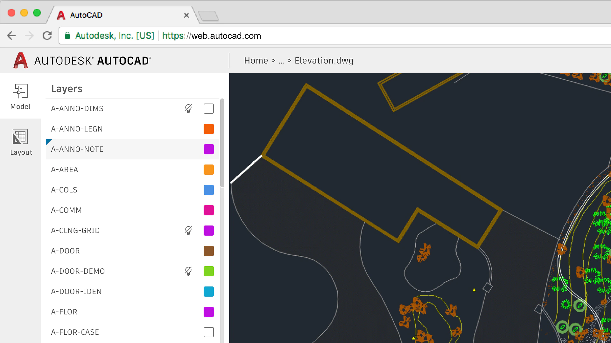

Web
Polyglot Web
Bertil Chapuis
## Overview of Today's Class <img src="images/mindblow.gif" style="height: 50%"/>
The Polyglot Web
## WebAssembly WebAssembly (abbreviated Wasm) is a binary instruction format for a stack-based virtual machine. Wasm is designed as a portable compilation target for programming languages, enabling deployment on the web for client and server applications. https://webassembly.org/
## Emscripten Emscripten is a complete compiler toolchain to WebAssembly, using LLVM, with a special focus on speed, size, and the Web platform https://emscripten.org/
## wasm-pack This tool seeks to be a one-stop shop for building and working with rust- generated WebAssembly that you would like to interop with JavaScript, in the browser or with Node.js. https://rustwasm.github.io/docs/wasm-pack/
## GraalVM GraalVM is a high-performance JDK distribution designed to accelerate the execution of applications written in Java and other JVM languages. https://emscripten.org/
## <i class="fas fa-hand-paper"></i> Hands-on Enough talking, let's give it a try... https://github.com/web-classroom/example-polyglot
Who uses these tools?
## <i class="fas fa-language"></i> Autodesk [Autodesk](https://madewithwebassembly.com/showcase/autocad/) uses WebAssembly to publish the Web version of AutoCAD. This allows them to run decades old legacy code in the browser. The cost of porting the code to JavaScript would have been too high. 
## <i class="fas fa-language"></i> Figma [Figma](https://www.figma.com/blog/webassembly-cut-figmas-load-time-by-3x/) uses WebAssembly and C++ to create its design tools. More specifically, they use WebAssembly to speed up the loading of their web application. <img src="images/figma.webp" style="height: 60%"/>
## <i class="fas fa-language"></i> Google Google notoriously uses WebAssembly for its [TensorFlow.js](https://blog.tensorflow.org/2020/03/introducing-webassembly-backend-for-tensorflow-js.html) library and for its [Google Earth](https://earth.google.com/) platform. <img src="images/google-earth.png" style="height: 60%"/>
## <i class="fas fa-language"></i> Cloudflare [Cloudflare](https://blog.cloudflare.com/webassembly-on-cloudflare-workers/) uses WebAssembly as a runtime for Cloudflare workers. This allows them to run user-provided code in a secure environment at the edge of the Internet.
## <i class="fas fa-language"></i> Mapbox Mapbox uses nodeJS and C++ to create high performance web services. This allows them to prototype fast with JavaScript and then to optimize performance critical parts with C++. https://www.figma.com/blog/webassembly-cut-figmas-load-time-by-3x/